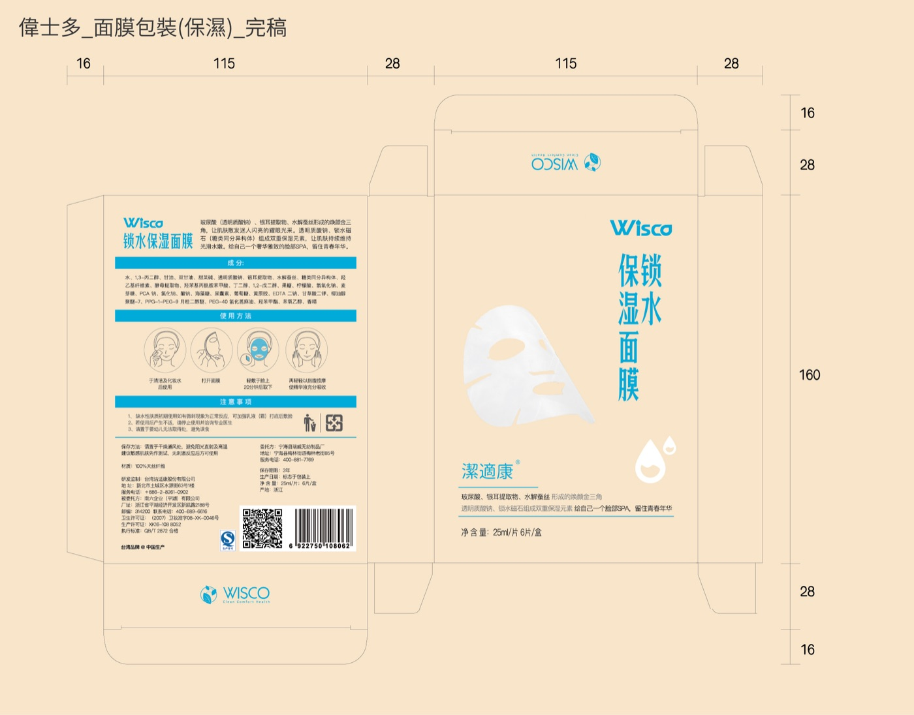
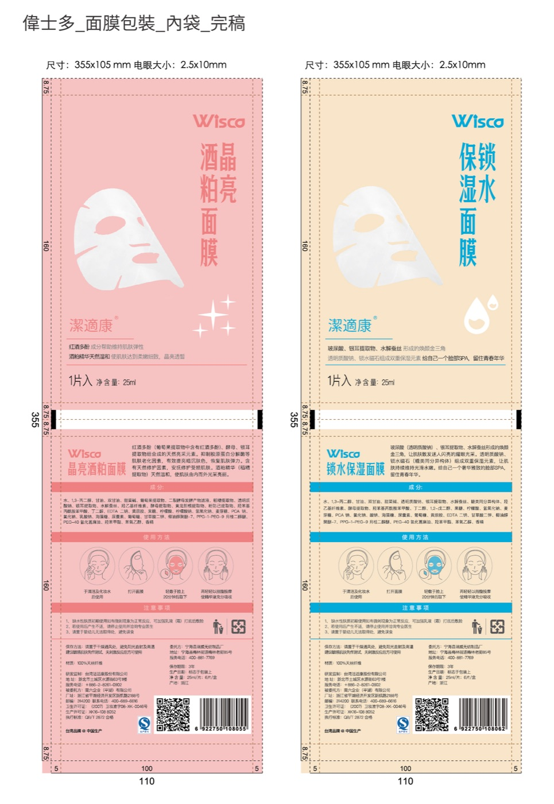
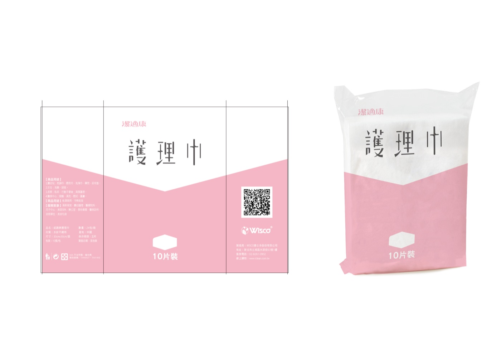
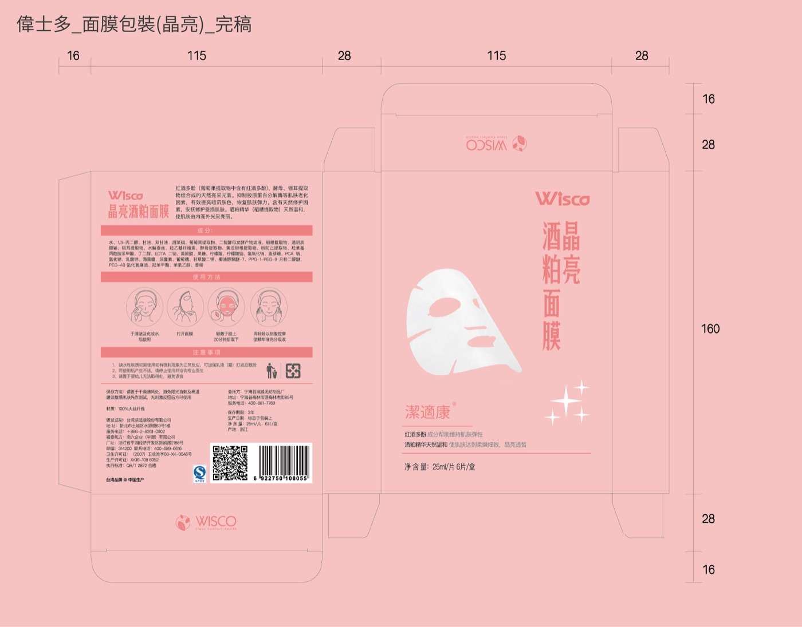
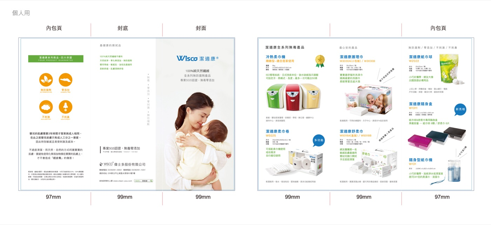
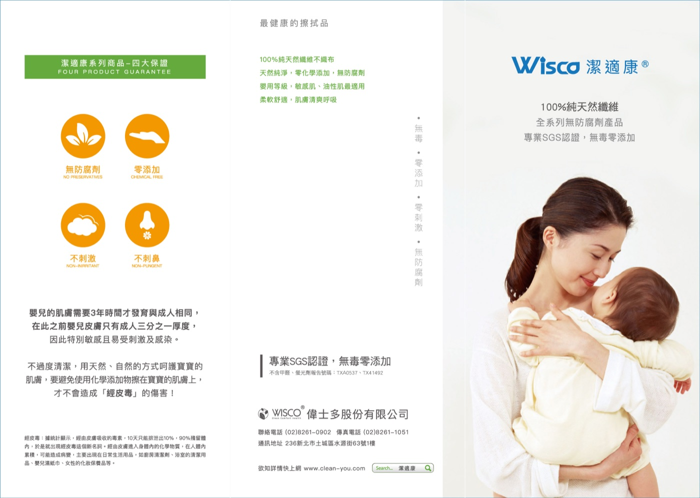

BILA Creative
必樂創意行銷
Works
Website
Services
About
Contact
Wisco
偉士多
品牌整合 · 包裝 · 網站 · 棚拍
為生活用品品牌偉士多執行品牌整合：Logo 系統、面膜包裝、產品 DM、網站素材與棚拍，從品牌到通路的完整服務。
Client: 偉士多
Scope: 品牌 / 包裝 / 網站 / 棚拍
Scale: 5,000+ 檔 · 品牌到通路





